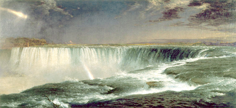

The potential energy of the water which falls through the pipes on the turbine blades is converted into kinetic and spins a turbine, and that rotation through a common shaft transmits to the rotating rotor of an electric generator. The rotor is actually an electromagnet. Electricity that is produced is formed in the stator windings. When the magnetic field (due to rotation) quickly changes in front of the stator poles it is generating an electric potential or current. The powerplants must pay particular attention to the turbine speed so that the frequency (the number of changes per second) of the AC remains the same (by the industry standard). Therefore putting a hydropower plant to work is a complex procedure, and only when it reaches the correct frequency, the power plant is connected to the power system. With the construction of the Tesla's power plant on the Niagara Falls started the electrification of our planet.